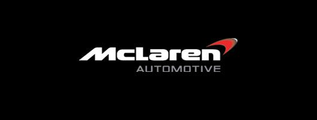
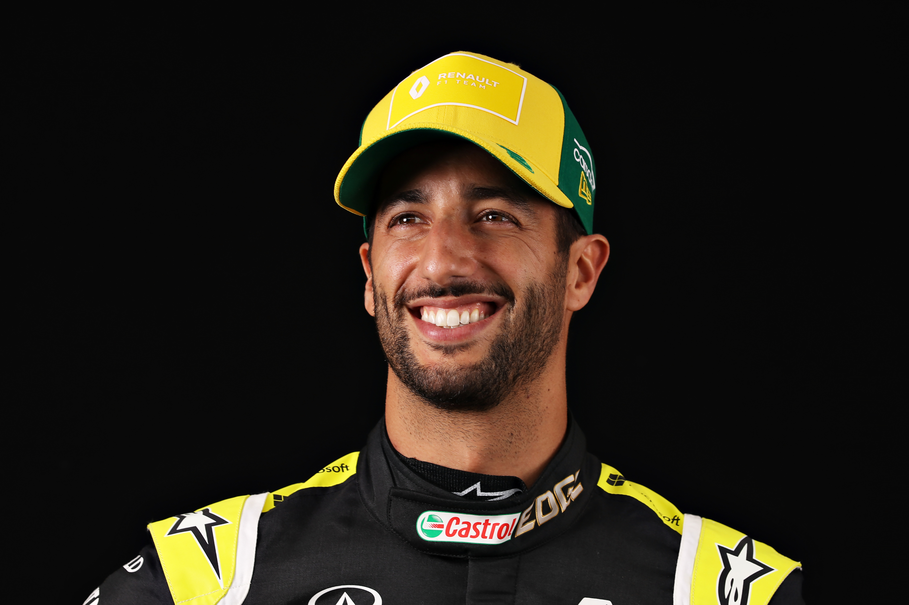
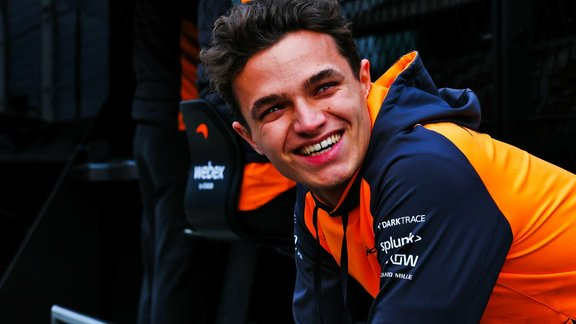

Mclaren

De grands noms de l'automobile, tels que Prost, Senna ou encore Hamilton, ont été au volant de l'une des meilleures écuries de f1 : Mclaren Racing. Fondée en 1963 par Bruce Mclaren, l'écurie démarre en Formule 1, en 1966 avec son créateur au volant, ce qui en fait aujourd'hui la plus ancienne équipe dans ce championnat après Ferrari.
Les pilotes de la saison 2022 :
Daniel Ricciardo

Pilote automobile australien, Daniel Ricciardo a couru de 2014 à 2018 dans l'écurie Red Bull Racing, pour laquelle il a obtenu sept victoires, trois pole positions, treize meilleurs tours en course et 29 podiums. Il s'engage, à partir de la saison 2019, avec Renault, pour qui il obtient en 2020 son 30e podium, avant de rejoindre Mclaren en 2021.
Son style de pilotage agressif, ses dépassements osés lui a permis de remporter le Grand Prix d’Azerbaïdjan 2017, ainsi que son large sourire font de Daniel Ricciardo l'un des pilotes les plus charismatiques et les plus appréciés des fans de formule 1.
Lando Norris

Champion de Formula 3 Européenne en 2017, il fait ses débuts en Formule 1 en 2019 et marque ses premiers points lors de la seconde course, en se classant sixième du Grand Prix de Bahreïn. Il monte sur son premier podium en 2020 en terminant troisième du Grand Prix d’Autriche. Le Britannique continuera avec McLaren jusqu'en 2025 et connaît un futur très prometteur.